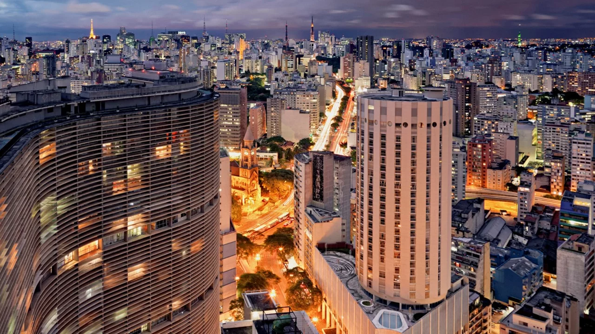

Economia Pujante: São Paulo é o coração econômico do Brasil, abrigando uma variedade de indústrias, empresas e empreendimentos. Seu poder econômico é evidente nas inúmeras sedes de corporações nacionais e multinacionais que se estabeleceram na cidade, contribuindo significativamente para a geração de riqueza e empregos.
Cultura Vibrante: A diversidade cultural de São Paulo é uma verdadeira riqueza. Com uma população diversificada, a cidade abriga uma infinidade de manifestações culturais, desde a música e a dança até as artes plásticas e o teatro. Seus museus, galerias de arte e teatros estão entre os mais renomados do país.
Gastronomia Excepcional: São Paulo é um paraíso para os amantes da gastronomia. Com uma infinidade de restaurantes que representam diversas culinárias do mundo, desde a tradicional comida brasileira até pratos sofisticados da alta gastronomia internacional, a cidade oferece uma experiência gastronômica única e deliciosa.
Parques e Áreas Verdes: Apesar de ser uma metrópole movimentada, São Paulo também é rica em áreas verdes. Parques como o Ibirapuera, o Parque da Cantareira e o Parque Villa-Lobos oferecem refúgios tranquilos da agitação da cidade, proporcionando espaços para atividades ao ar livre, recreação e contato com a natureza.
Arquitetura Imponente: O skyline de São Paulo é marcado por uma arquitetura impressionante, que mescla construções históricas com arranha-céus modernos. Edifícios icônicos como o Edifício Copan, o MASP e a Catedral da Sé são testemunhos da riqueza arquitetônica da cidade.

ção de Qualidade: São Paulo é um importante polo educacional, com algumas das melhores universidades e instituições de ensino do país. A presença de instituições renomadas como a Universidade de São Paulo (USP) e a Universidade Estadual de Campinas (UNICAMP) contribui para o desenvolvimento intelectual e a formação de profissionais altamente qualificados.
Diversidade Étnica e Cultural: A diversidade é uma das principais riquezas de São Paulo. Com uma população formada por pessoas de diferentes origens étnicas, culturais e sociais, a cidade é um verdadeiro caldeirão de culturas, onde diferentes tradições se encontram e se misturam, enriquecendo o tecido social e cultural da metrópole.
Centros de Comércio e Entretenimento: Os centros comerciais e de entretenimento de São Paulo são verdadeiros templos do consumo e da diversão. Bairros como a Avenida Paulista, a Rua Oscar Freire e a Vila Madalena oferecem uma infinidade de opções de compras, restaurantes, bares e casas de espetáculos, tornando-se pontos de encontro e lazer para os moradores e visitantes.
Inovação e Tecnologia: São Paulo é um polo de inovação e tecnologia, abrigando empresas e startups que estão na vanguarda de diversos setores, como tecnologia da informação, biotecnologia, e-commerce e fintechs. A cidade é um berço de ideias inovadoras e empreendimentos promissores, impulsionando o desenvolvimento econômico e social.
Cidadãos Empreendedores e Criativos: Os habitantes de São Paulo são conhecidos por sua criatividade, empreendedorismo e espírito inovador. A cidade atrai pessoas de todo o país e do mundo que buscam oportunidades de negócios, realização profissional e pessoal, contribuindo para a dinâmica e a energia única da metrópole.